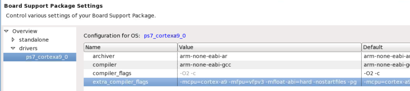
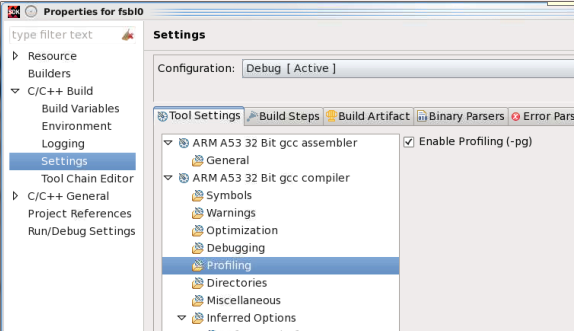

There are three important steps involved in setting up the software application for profiling:
- Enable profiling in the Software Platform to include profiling libraries. Note: Profiling is supported only for standalone software platforms.
- Add -pg to the extra compiler flags to build the BSP with profiling.

- Set enable_sw_intrusive_profiling to true in BSP settings.

- Add -pg to the extra compiler flags to build the BSP with profiling.
- Enable profiling in application C/C++ build settings.
